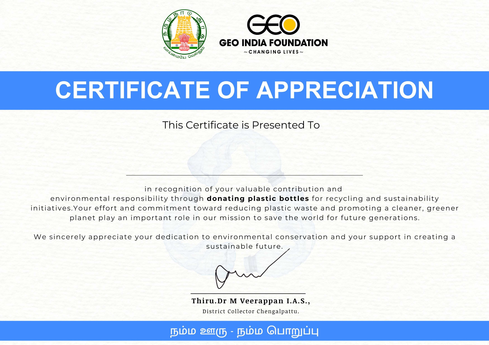
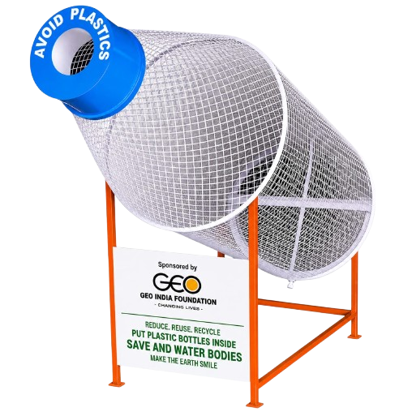

RecyclerNamma Ooru Namma Poruppu
Register NowBottle recycling
Bottle disposed? Submit this form to record it.
Each QR code scan allows one bottle submission. Complete 50 bottle submissions to unlock your Appreciation Certificate.
Certificate
Certificate Preview
Plastic pollution
Plastic pollution is one of the most serious environmental challenges affecting our planet today. Improper disposal of plastic bottles pollutes rivers, lakes, oceans, and surrounding ecosystems, causing harm to wildlife and human health.
Recycling plastic waste helps reduce environmental damage, conserve natural resources, and promote a cleaner, greener future. By donating plastic bottles for recycling, individuals contribute to sustainable waste management and environmental protection.
Small actions can create a big impact. Together, through responsible recycling habits and community participation, we can build a sustainable future and protect the Earth for generations to come.

Initiative by the Chengalpattu Collector
Thiru.Dr M Veerappan I.A.S.,
Who We Are
Geo India Foundation is a registered non-profit organization committed to promoting environmental sustainability and community development across Tamil Nadu. Established in 2016, the foundation actively works on initiatives such as plastic waste management, recycling awareness, tree plantation, education, healthcare, women's empowerment, and rural development. Through its eco-friendly programs, the organization encourages individuals and communities to adopt responsible environmental practices and contribute to building a cleaner, greener future.
The foundation believes in creating a long-term positive impact through community participation, grassroots engagement, and collaboration with volunteers, educational institutions, corporates, and local stakeholders. By organizing recycling drives and sustainability campaigns, Geo India Foundation inspires people to reduce plastic waste, protect natural resources, and support environmental conservation for the well-being of future generations.
Where We Work
Geo India Foundation actively serves communities across several districts and regions of Tamil Nadu, including Chennai, Chengalpattu, Thiruvallur, Minjur, Palaverkadu, Thiruttani, Kadalur, Ayanavaram, Mogappair, Kannagi Nagar, and Maduranthagam.
The foundation has adopted over 150 tribal villages and continues to expand its reach to underserved rural areas. Its initiatives are designed to address local challenges through environmental conservation, educational support, healthcare awareness, skill development, and community welfare programs.
Chennai
Chengalpattu
Thiruvallur
Minjur
Palaverkadu
Thiruttani
Kadalur
Ayanavaram
Mogappair
Kannagi Nagar
Maduranthagam
What We Do
Environmental Protection
Encouraging sustainable recycling practices and environmental awareness to create a cleaner, greener, and healthier future.
Tree Plantation & Green Initiatives
Planting and maintaining trees across Tamil Nadu to improve environmental health and climate resilience.
Water Body Restoration
Reviving lakes, ponds, and wetlands through conservation and cleanup initiatives.
School Revitalization
Transforming government schools into inspiring learning spaces through infrastructure improvements and beautification projects.
Higher Education Support
Providing scholarships and financial assistance for underprivileged students pursuing higher education.
Skill Development Programs
Operating vocational training centers that empower youth and women with employable skills.
Women's Health & Hygiene
Conducting awareness programs on menstrual hygiene, nutrition, sanitation, and women's health.
Tribal Village Development & Food Support
Supporting tribal village development through food assistance and community welfare initiatives while preserving culture and dignity.
Plastic pollution in pictures
Visualizing the Impact of Plastic Waste
Land pollution
Waste reaches even green spaces
Ocean action
Beach litter moves quickly into the sea
Wildlife impact
Animals are forced to live with our waste
Rescue need